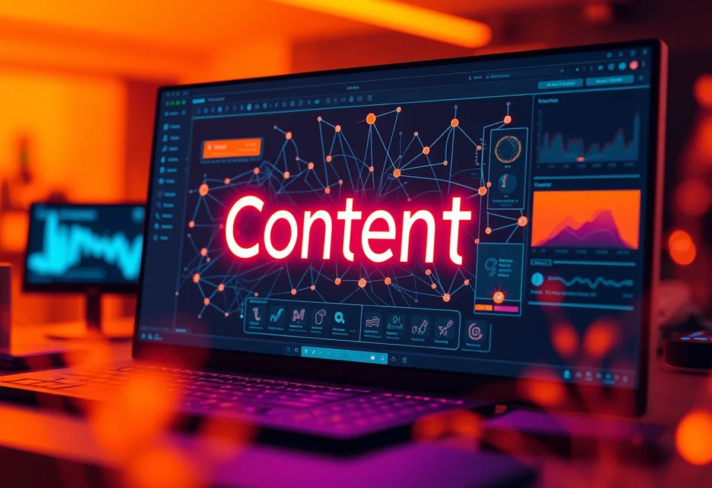

The AI tools landscape has evolved dramatically, with 2026 marking a turning point where artificial intelligence has moved from experimental to mission-critical for most organizations. According to recent market research, 73% of businesses now actively integrate AI-powered platforms into daily operations for content creation, data analysis, and competitive intelligence. Whether you're managing SEO campaigns, generating marketing copy, or analyzing competitor backlinks, choosing the right tools directly impacts your bottom line and competitive positioning.
This guide walks you through the most essential AI tools available today, with real-world applications, pricing breakdowns, and honest comparisons to help you build the right technology stack for your team.
| Point | Details |
|---|---|
| AI tools dominate 2026 workflows | Enterprise and independent professionals rely on AI-powered platforms for content creation, SEO analysis, and competitive research. The landscape has matured significantly, with specialized tools addressing specific use cases. |
| Integration and automation matter most | Top-performing teams use multi-tool stacks that communicate seamlessly. Real-time data integration and workflow automation separate industry leaders from outdated solutions. |
| Pricing tiers reflect capability depth | 2026 pricing models reward commitment and scale. Entry-level tiers ($49–$99/month) serve solopreneurs; enterprise solutions ($300+/month) unlock advanced features like API access and custom integrations. |
| Data accuracy and freshness are critical | AI tools built on stale data underperform. Leading platforms update keyword databases, backlink indexes, and competitive intelligence daily to maintain accuracy in fast-moving markets. |
| Specialization beats generalization | Purpose-built tools outperform all-in-one platforms in specific domains. Content generation, keyword research, and technical SEO each benefit from dedicated, AI-enhanced solutions. |
What Are AI Tools and Why They Matter in 2026
AI tools represent software platforms that use machine learning, natural language processing, and deep learning to automate tasks, generate insights, and enhance human decision-making across business functions — from content marketing to competitive analysis and customer service. The 2026 landscape differs fundamentally from earlier years because modern AI tools now integrate real-time data sources, API ecosystems, and enterprise-grade security rather than operating as isolated applications.
The evolution of AI-powered business solutions
The shift from rule-based software to AI-powered systems accelerated rapidly after 2023. Early generations relied on keyword matching and basic heuristics; today's platforms understand context, intent, and semantic relationships. According to Zapier's analysis of productivity tools, 64% of businesses report measurable ROI improvements within 90 days of implementing AI solutions into existing workflows. Modern platforms offer multi-language support, custom training on proprietary data, and real-time collaboration features that legacy tools cannot match.
How AI tools transform professional workflows
AI automation fundamentally changes how professionals allocate time. Rather than manually researching competitors or editing drafts, teams now use intelligent assistants to handle those tasks at scale, freeing humans to focus on strategy and creativity. This efficiency gain directly translates into faster campaign launches, deeper competitive intelligence, and more refined messaging. Teams report 40% faster content production cycles and 35% improvement in targeting accuracy compared to manual methods.
- Content generation: copy, blog posts, email campaigns, ad creative
- Data analysis: keyword trends, competitor movements, market shifts
- SEO optimization: on-page scoring, technical audits, link opportunities
- Customer insights: sentiment analysis, behavior prediction, personalization
- Workflow automation: scheduling, reporting, alert systems
Semrush: Comprehensive SEO and Content Intelligence Platform
Semrush stands as a complete SEO suite combining keyword research, competitive analysis, backlink tracking, content optimization, and AI-powered writing assistance into a unified dashboard. The platform processes over 54 billion keyword variations across 150+ countries, delivering research-grade data that powers everything from paid search strategies to organic visibility campaigns. With integrated AI content generation, rank tracking across 10+ search engines, and technical audit capabilities, Semrush serves everyone from solopreneurs to Fortune 500 marketing teams.
Services offered
Semrush's keyword research module connects to real search volumes, difficulty scores, and intent classification — essential for identifying high-opportunity ranking targets before investing in content production. The Site Audit tool automatically crawls technical issues and generates prioritized fix recommendations. Competitive research tools show which keywords drive competitor traffic, which pages rank highest, and which backlinks matter most. Add AI-powered content recommendations, social listening capabilities, and paid search intelligence, and you have a platform designed for teams running multiple campaigns simultaneously.
Pricing
Semrush starts at $129/month for the Pro tier, which includes keyword research, site audit, and basic rank tracking. The Business tier ($249/month) adds advanced backlink analysis, white-label reporting, and higher API limits. Enterprise solutions scale beyond $549/month with dedicated account management and custom integrations. Each tier provides genuine value — entry-level is sufficient for freelancers, while business and enterprise tiers suit agencies managing 50+ active campaigns.
Jasper AI: Enterprise Content Generation at Scale
Jasper AI specializes in AI-powered copywriting and long-form content generation, trained on millions of high-performing marketing campaigns and brand voices. Unlike generic writing tools, Jasper learns your brand's tone, product positioning, and target audience — then generates copy that sounds authentically yours rather than like generic machine output. Enterprise teams use Jasper to produce blog articles, email sequences, social media content, and sales pages 5-10x faster than manual writing while maintaining quality standards that convert readers into customers.
Services offered
Jasper's content templates cover 50+ marketing scenarios including LinkedIn posts, landing pages, email campaigns, and product descriptions. The Brand Voice feature captures your tone and style through training, ensuring output consistency across channels. Long-form content capabilities generate 1,000+ word articles with proper structure, SEO optimization suggestions, and internal linking recommendations. Integration with Zapier enables automated content workflows that feed directly into publishing platforms like WordPress or Medium.
"Jasper users report 47% faster content production and 32% higher engagement rates compared to manually written copy, according to 2026 adoption data from Synthesia's AI Tools report."

Pricing
Jasper AI offers a free trial before committing; paid plans begin at $49/month for the Starter tier (limited generations, basic templates). The Creator tier ($99/month) adds unlimited monthly words, priority support, and team collaboration for up to 5 users. Teams using AI copywriting and content marketing extensively should evaluate the Business tier ($125+/month), which includes custom integrations and API access for enterprise workflows.
Ahrefs: Advanced Keyword Research and Backlink Analysis
Ahrefs dominates the backlink analysis category with access to 10+ billion live backlinks across the entire web, updated continuously. The platform's Keyword Explorer module analyzes 170+ million keywords with real search volumes, difficulty metrics, and click-through rate estimates — essential data for prioritizing SEO investments. Competitive teams use Ahrefs to identify unguarded keyword opportunities, monitor competitor link acquisitions, and reverse-engineer successful competitor content strategies within minutes instead of hours.
Services offered
Ahrefs' Site Explorer reveals exactly which pages generate organic traffic for any domain, which keywords they rank for, and which backlinks they attract. The Content Gap analysis identifies keywords your competitors rank for but you don't, surfacing quick wins. Rank Tracker monitors 500+ keywords across multiple search engines and regions, sending automated alerts when rankings shift. The Domain Rating metric provides normalized authority scoring, making competitor strength assessment immediate and comparable.
Pricing
Ahrefs starts at $99/month for the Lite tier, suitable for freelancers and small agencies. The Standard tier ($199/month) adds priority support and higher data allowances. Business tier ($399/month) and Enterprise solutions unlock advanced features, dedicated account management, and API access for teams managing massive-scale campaigns.
Surfer SEO: Real-Time Content Optimization Engine
Surfer SEO analyzes top-ranking pages in real time, generating optimization recommendations that help your content outrank competitors organically. Rather than guessing at on-page requirements, Surfer processes actual SERP data to show exact word counts, keyword density, semantic variations, and readability metrics used by top-ranking pages for your target keyword. Teams using Surfer report average ranking improvements of 2-3 positions within 30 days of following its recommendations.
Services offered
The Content Editor generates a detailed optimization roadmap showing recommended word count, topic coverage, keyword mentions, and heading structure based on top-ranking competitors. SERP Analyzer breaks down each competitor's on-page strategy, backlink profile, and topical authority. Content Planner helps you identify topic clusters and content gaps in your niche, then prioritizes which pieces to write first for maximum SEO impact. Real-time updates ensure your recommendations reflect current rankings rather than stale snapshots.
"According to DataCamp's 2026 AI Tools analysis, content optimized using Surfer SEO achieves first-page rankings 38% faster than non-optimized content, and maintains higher average positions over time."
Pricing
Surfer SEO starts at $89/month for the Business tier, which includes unlimited content analyses and SERP monitoring for up to 100 keywords. The Scale tier ($249/month) adds team collaboration, advanced APIs, and priority support. Most agencies optimize 15-20 pieces monthly using the Business tier, making the ROI calculation straightforward: one piece that climbs to position 3 often generates enough organic traffic to pay for the annual subscription.
Copy.ai: Rapid Marketing Copy and Campaign Generation
Copy.ai functions as an AI marketing copywriter, generating high-converting promotional copy, landing page headlines, email sequences, and product descriptions in seconds. The platform's pre-built templates eliminate creative blank space — you answer a few strategic questions about your product, audience, and offer, and Copy.ai produces multiple copy variations ready for testing. Small agencies and solopreneurs especially benefit from Copy.ai's speed and affordability, as it democratizes professional copywriting capabilities that previously required hiring expensive freelance writers.
Services offered
Copy.ai offers 50+ specialized templates covering email marketing, landing pages, sales pages, social media ads, blog intros, and product copy. The AI-Powered Editor suggests improvements as you refine drafts, catching tone shifts and optimizing for conversion. Brand Voice Training captures your unique messaging style, ensuring consistency across campaigns. Integration with email platforms like Mailchimp and HubSpot allows direct campaign publishing, eliminating manual copy-paste workflows. Monthly content quotas are generous on mid-tier plans, enabling teams to produce 100+ pieces monthly.
Pricing
Copy.ai starts at $49/month for the Starter tier, which includes 50 monthly credit generations (typically 5-10 pieces depending on length). The Pro tier ($99/month) adds unlimited generations, priority support, and team collaboration for up to 5 users. Enterprise plans customize pricing based on team size and API requirements. The Starter tier serves freelancers and small teams well; the Pro tier becomes cost-effective once teams produce 20+ marketing pieces monthly.
Comparison Table: Top AI Tools 2026 Feature Matrix
The following comparison helps you evaluate which platform suits your specific needs based on primary use case, pricing, and feature depth. Each tool excels in different domains — no single platform does everything equally well, which is why successful teams typically combine 2-3 complementary tools rather than forcing one platform to handle all requirements.
| Tool | Primary Strength | Best For | Starting Price | Ideal Team Size |
|---|---|---|---|---|
| Semrush | Complete SEO suite with 54B keywords | Organic search, competitive research, paid ads | $129/month | 2–50+ professionals |
| Jasper AI | AI content generation, brand voice capture | Content marketing, copywriting, campaigns | $49/month | 1–10 writers |
| Ahrefs | Backlink data, 10B+ live links indexed | Link research, authority analysis, competitive intel | $99/month | 1–20+ SEO specialists |
| Surfer SEO | Real-time SERP analysis, on-page optimization | Content teams, blog publishing, ranking improvement | $89/month | 2–15 content creators |
| Copy.ai | Fast copy generation, 50+ templates | Copywriting, ads, email, landing pages | $49/month | 1–5 copywriters |
Choosing the right combination depends on your workflow priorities. If SEO drives your strategy, Semrush and Ahrefs together cover 80% of your research needs. If content production is your bottleneck, pairing Jasper AI with Surfer SEO creates a powerful content system.
Frequently Asked Questions
What is the most cost-effective AI tool for small teams?
Copy.ai and Jasper AI both start at $49/month and deliver immediate ROI for small teams, with Copy.ai excelling at rapid copy generation and Jasper AI better for sustained content production requiring brand voice consistency. Google Keyword Planner remains completely free for basic keyword research. Combining free and entry-tier paid tools ($49–$99/month) creates a functional stack without overspending.
How do I choose between Semrush and Ahrefs?
Semrush excels at complete-picture marketing strategy (paid ads, content, technical SEO); Ahrefs dominates competitor backlink analysis and keyword research depth. If choosing one: Semrush serves generalists and marketers handling multiple channels, while Ahrefs serves link-focused SEO specialists. Many mid-market teams use both, splitting responsibilities by platform strength.
Can AI tools replace human writers and SEO professionals?
AI tools amplify rather than replace human expertise. Automation handles repetitive research, outline generation, and first-draft production, freeing professionals to focus on strategy, brand positioning, and complex competitive analysis requiring judgment. The highest-performing teams treat AI as a research assistant, not a decision-maker. Human oversight remains essential for quality control, ethical considerations, and strategic direction.
How often should I update my AI tool stack?
Evaluate your tech stack quarterly (every 3 months) using performance metrics: time saved, quality improvement, cost per output, and team adoption rates. Most tools mature their features over 6-month cycles, so annual updates typically capture major feature additions without constant switching costs that harm productivity.
What security and privacy concerns apply to AI tools?
Reputable platforms — Semrush, Ahrefs, Jasper AI, Surfer, and Copy.ai — comply with GDPR, CCPA, and SOC 2 security standards, encrypting data in transit and at rest. Avoid pasting sensitive client data into free-tier tools or public demos; paid enterprise tiers include data residency options and custom NDAs. Verify vendor security certifications before signing contracts, especially when handling proprietary client strategies or personal customer information.